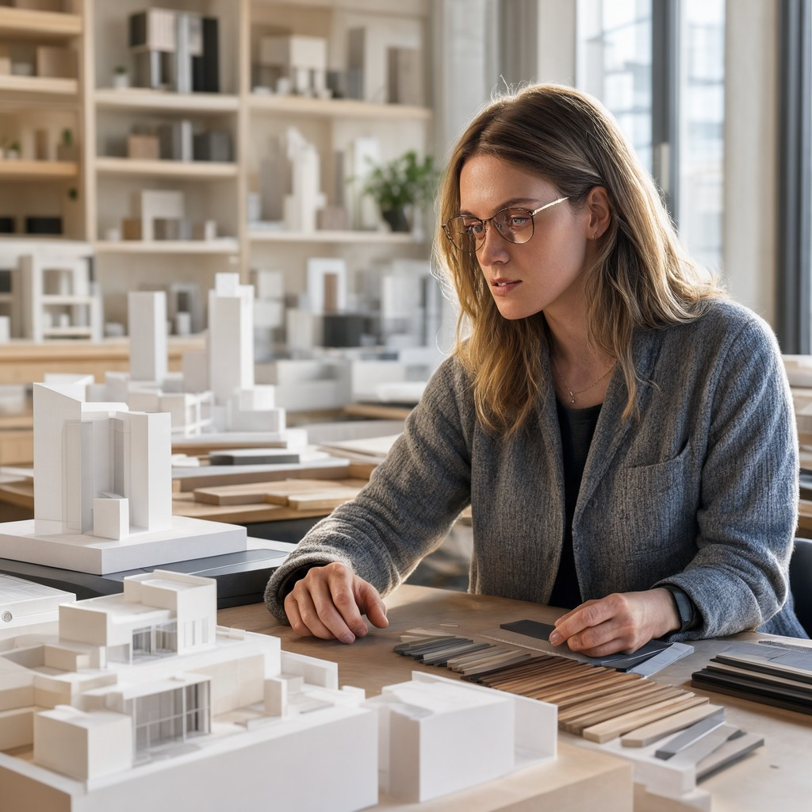
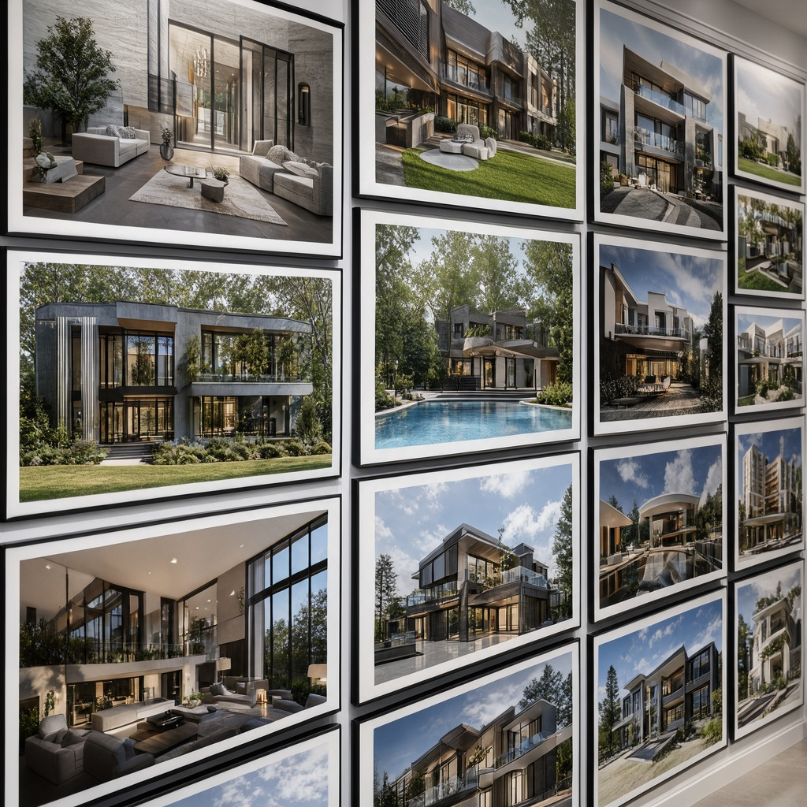
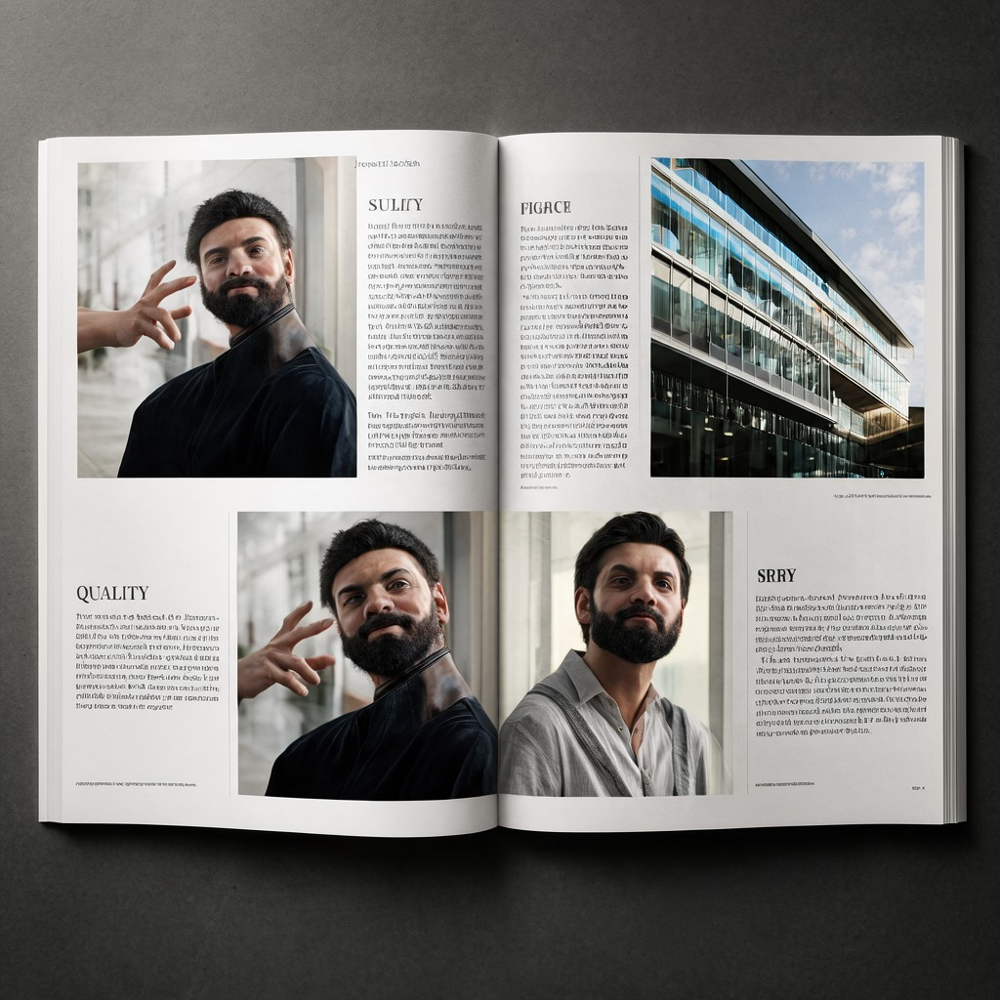

Conceptual Portfolio Project
The Glass Pavilion
A transparent art pavilion in a sculpture park, minimal steel and glass.
Project Overview
At 2,400 meters in the Rocky Mountains, The Glass Pavilion is an experiment in disappearance. The brief: a structure to house rotating contemporary art installations in a sculpture park, with the requirement that the architecture not compete with the art — or the landscape.
The response is a pure glass box: twelve meters square, four meters high, supported by a minimal steel moment frame. The glass is low-iron, double-laminated, with a barely perceptible ceramic frit pattern that reduces bird strike and solar gain while maintaining 92% light transmission. The steel columns — four at the corners, two at mid-span — are slender cruciform sections, painted a matte charcoal that reads as shadow against the snow.
The pavilion sits on a plinth of local sandstone, slightly raised above the meadow. No visible doors — the entire glass wall on the park-facing side slides away on concealed tracks, opening the interior completely to the landscape. When closed, the joint is invisible. The floor is polished concrete, its surface continuous with the exterior paving, blurring the threshold.
Services are concentrated in a buried spine along the rear edge: climate control, lighting, security, all accessed via a discrete hatch. The roof is a structural glass deck, walkable for maintenance, its surface catching snow in winter and reflecting the aspen canopy in summer. At night, the pavilion glows from within — a lantern in the meadow, its contents visible to passing elk and the occasional hiker.
Design Concept
Architecture as absence
The concept is subtraction. In a landscape of such overwhelming presence — the Maroon Bells, the aspen groves, the quality of alpine light — any architectural gesture risks becoming visual noise. The pavilion's ambition is to not be seen, to become a condition rather than an object.
The steel frame is calibrated to the minimum required for structural integrity at this elevation: wind loads, snow loads, seismic zone D. The columns are spaced at six meters, the maximum span for the glass roof without intermediate supports. The connections are custom-machined, their geometry derived from force flow diagrams — each bolt, each weld, each radius is structurally necessary and nothing more.
The glass is the protagonist. Low-iron formulation eliminates the green cast typical of thick laminated glass. The ceramic frit — a pattern of 1mm dots at 8mm spacing, covering 18% of the surface — is calibrated to the visual acuity of local bird species at flight speed. From human distance, the pattern reads as a subtle atmospheric haze; from bird distance, it reads as a solid barrier.
The sliding wall system is a feat of precision: four 3-meter panels, each weighing 800kg, running on recessed tracks with magnetic seals. When open, the panels stack behind the corner columns, disappearing entirely. The transition from enclosed to open takes 45 seconds, silent as breath. This operability transforms the pavilion from gallery to porch to platform — the art, the architecture, and the landscape in continuous dialogue.
Lighting is integrated into the roof's structural glass: linear LED modules laminated between the glass plies, invisible when off, uniformly luminous when on. Color temperature is tunable from 2700K to 6500K, calibrated to each exhibition's requirements. The system is DMX-addressable, allowing per-fixture control for dramatic effects — a sunset simulation, a color field, a slow pulse synchronized to a sound installation.

Image Gallery
Spaces in detail





Project Information
Credits & Details
Project Team
- Lead Architect
- Thomas Andersson
- Project Architect
- Yuki Tanaka
- Structural Engineer
- Eckersley O'Callaghan
- Glass Engineering
- Schlaich Bergermann Partner
- Climate Engineering
- Transsolar Energietechnik
- Lighting Design
- Lumière Studio
- Art Consultant
- Aspen Art Museum
- Photography (Conceptual)
- LUMORA Visualization Team
Project Data
- Site Area
- 500 m² (within 50-acre sculpture park)
- Built Area
- 144 m²
- Plinth
- 180 m²
- Levels
- Single level + accessible roof deck
- Structure
- Steel moment frame, structural glass envelope
- Glass Specification
- Low-iron, double-laminated, 12+12mm, ceramic frit 18%
- Sustainability
- Daylight autonomy 95%, geothermal, PV glass roof, bird-safe, minimal embodied carbon
- Design Phase
- Concept Design (RIBA Stage 2)
Disclaimer: The Glass Pavilion is a conceptual portfolio project created by LUMORA for demonstration purposes. It is not a completed client commission. All images are conceptual visualizations. Project details, team credits, and specifications are fictional.